General
|
|
Complete overhaul
|
Beta1 brought big changes to the OpenShift Tools in JBoss Tools. We tackled three times the amount of tickets we did in M5 (a total of 160).
We introduced the new OpenShift Express console, we split the single wizard into several ones with concise aims and
we brought a new OpenShift Server adapter with its own runtime. The new adapter may publish source and binary artifacts to the PaaS.
|
OpenShift Express Console
|
|
OpenShift Express Console
|
The central entry point is now what we call the OpenShift Express console.
It lists your accounts and applications. Actions in the context menu allow you manage your user accounts, domains, applications, embedded cartridges etc.
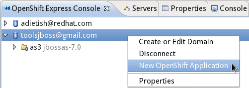
Related Jira
|
|
|
Properties
|
Details to the item selected in the OpenShift console are shown in the Properties view
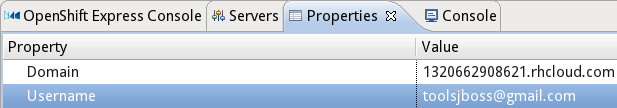
Related Jira
|
|
|
User passwords
|
We now allow you to store your OpenShift user password in the secure storage.
You wont have to retype it over and over again.
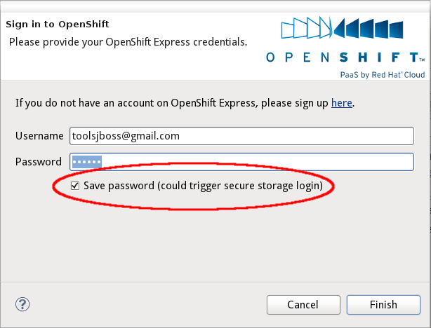
Related Jira
|
|
|
Embedded cartridges
|
You may now add or remove embedded cartridges for your applications. Beta1 offers it's own wizard for that sake.
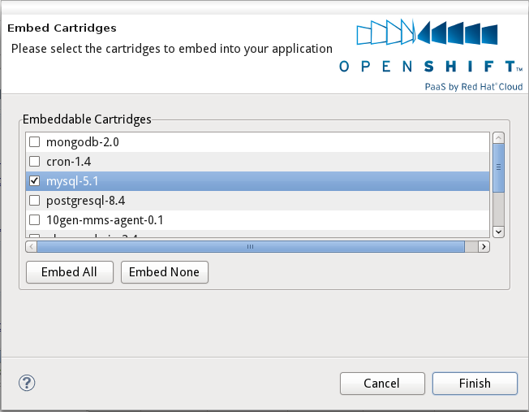
|
Creation and Import Wizards
|
|
Create Application
|
You may now create a new OpenShift application and import it to your workspace in a single hop.
Choose name, type, embedded cartridges and get over to the settings for your local project.
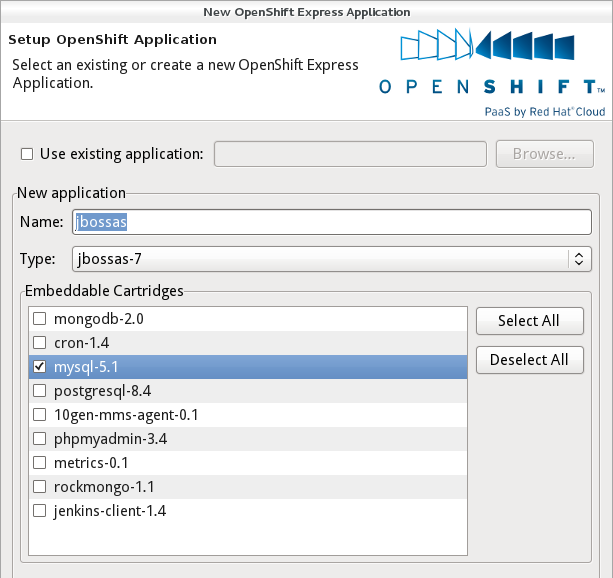
|
|
|
Import Application |
When importing, the application creation wizard will preselect the application you've chosen in the express console.

You may of course also make up your mind and choose another OpenShift application.
A separate dialog allows you to pick among the applications you're currently running on your your Paas.
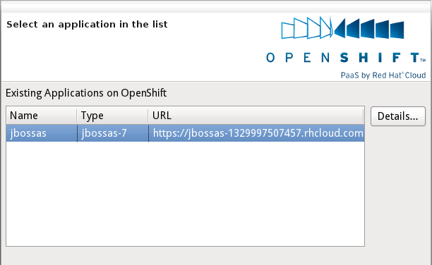
Related Jira
|
|
|
Workspace project |
When you create or import an OpenShift application, you may choose to either import it to a new new project
or to enable OpenShift for an existing project in your workspace.
We currently allow you to enable OpenShift for Eclipse WTP projects but we'll widen this up in upcoming releases.
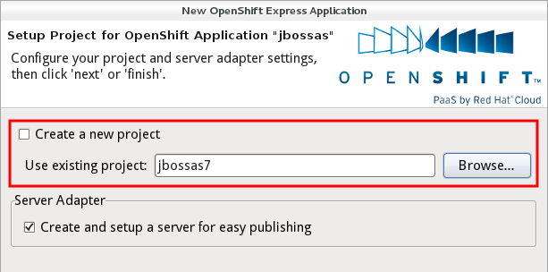
|
|
|
OpenShift Maven Profile |
When you enable OpenShift for an existing maven project in your workspace, we'll make shure it has the required
maven openshift profile. We add it to the pom if it's not present yet.
Related Jira
|
OpenShift Server
|
|
OpenShift Server Runtime |
In M5 the server adapter was only created when importing an OpenShift application.
Beta1 improves this a lot and allows you to exclusively create the server adapter.
Choose Create a Server Adapter in the
context menu of the OpenShift Express Console and here you go, you get a fresh adapter for your
existing OpenShift applciation.
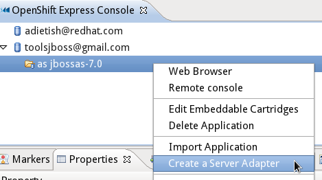
We always tried to stick to the Eclipse standards and therefore now also allow you to create the adapter like
any other Eclipse WTP server adapter. Choose the Eclipse new server wizard and pick the
OpenShift Express Server.
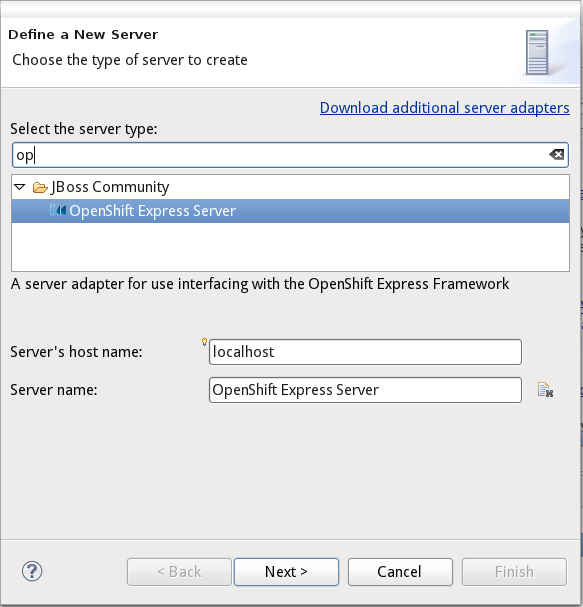
The second wizard page configures all OpenShift specific settings: Your credentials, the OpenShift applicaton
and your workspace project.
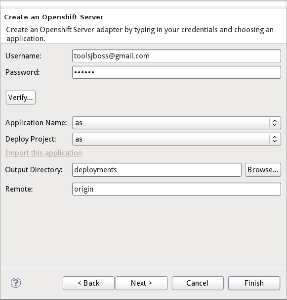
The new OpenShift Server Adapter is not bound to JBoss AS7 any more, it has it's own runtime.
You may therefore use it to publish to any OpenShift application. The prior limitation that restricted
you to publish to jbossas-7 applications only, is gone.
Related Jira
|
|
|
OpenShift Server Editor |
The Server Editor now reports all relevant informations that are involved when publishing the
workspace project to the OpenShift PaaS.
You'll find the project, the OpenShift application, the host, user name, git branch and deployments directory.
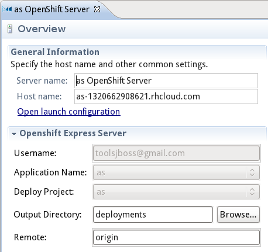
Related Jira
|
|
|
Source & Binary Deployment |
The new OpenShift Server adapter is now able to publish source and binary artifacts.
When you create the adapter, you bind it to a project in your workspace.
He'll (git) push any changes in the source of this project and publish them to the OpenShift application.
That's what we call the source publishing mode.
Given a jbossas-7 application, you may also drag and drop projects to the adapter as
you always could with Eclipse WTP server adapters.
The adapter will build wars for these projects,
copy them to the deployments folder of your project (the project the adapter is bound to)
and push them to the OpenShift application. The JBoss AS7.1 will then pick those wars and deploy them.
This is what we call the binary mode where binary artifacts are published to OpenShift.
Related Jira
|